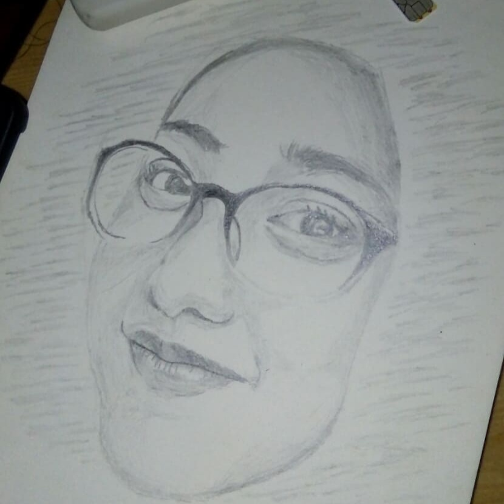
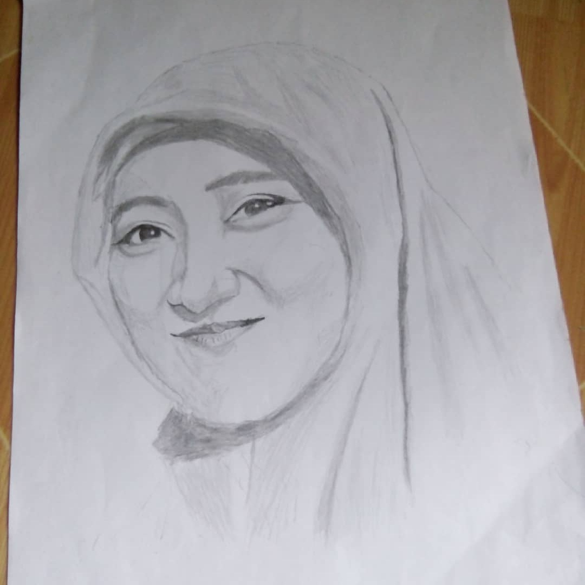
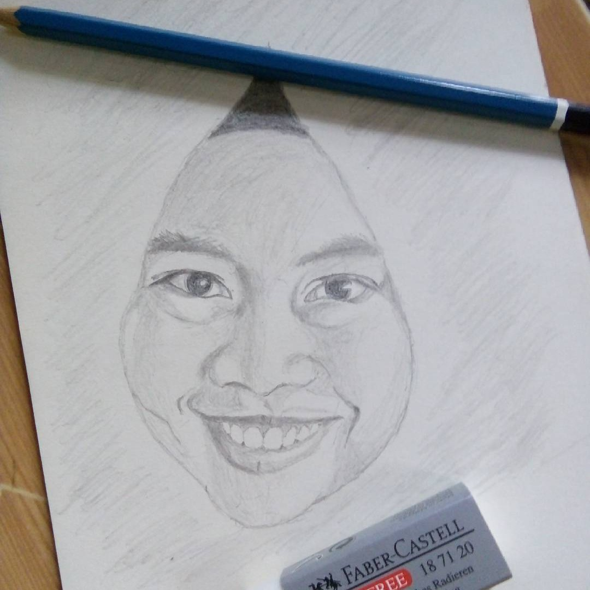

waktu itu di kampus tempat saya kuliah, tiba-tiba nge hype acara gambar-menggambar gara-garanya sih Bang Omen yang bikin sekte KURAWA yang sekarang lagi vakum.
pada mulanya saya cuman kagum saja, tapi gara-gara satu dan lain hal tiba-tiba saya jadi bersemangat untuk mencoba menggambar seperti bang omen, dan hasilnya diluar ekspektasi

dari yang tadinya hasil gambar saya jelek banget, sampe jadi kaya gambar yang diatas, ya walaupun masih jauh dari hasil karyanya bang omen, tapi masih tetep gak nyangka.

dari situ saya coba gambar orang lain, karena pada saat menggambar objek yang pertama saya punya motivasi lain terselubung hehehe... dan ternyata hasilnya lumayan juga.

Yang ini saya rasa hasilnya kurang maksimal, karena dibuat dadakan sebagai tanda ucapan atas kelulusan sidang skripsi beliau, tapi meski begitu orangnya tetep seneng dan di situ saya lupa bahwa temen-temennya bakal iri dan minta digambarin juga hahah...
biarpun karya lama 3 sketsa wajah tersebut paling berkesan, karena saya sudah tidak bisa lagi menggambar dengan kualitas yang sama seperti ketiga gambar tersebut akibat jarang dilatih.
selamat datang di website pribadi saya, website yang menyajikan aneka konten tidak menarik, dan tidak seru.
jangan lupa sawerannya biar website ini makin berkembang, mau nyawer? Klik di sini cukup sekian dan terimakasih.
Nurul Aziz © 2022 Allrigth's Reserved
Powered By Macan Rabiez